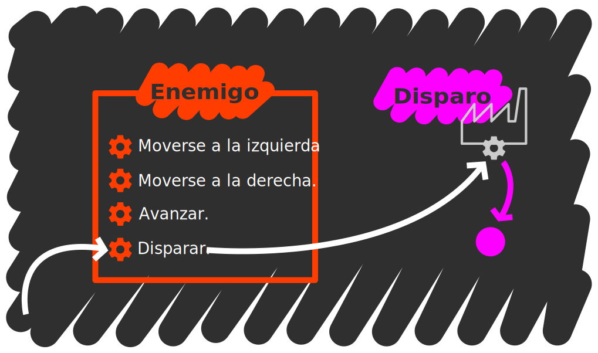

Los objetos de JavaScript y el poder usar código como un valor más permite codificar los conceptos de objeto y paso de mensajes de la programación orientada a objetos
Con lo que se ha visto hasta ahora se tiene suficiente conocimiento para codificar el estado
El conjunto de atributos del objeto del modelado orientado a objetos se traduce al conjunto de propiedades de los objetos JavaScript
En el ejemplo de Space Invaders, el estado de los enemigos formado por:
Figura 1: Estado del enemigo en el modelado de Space Invaders
Se puede codificar mediante:
let enemy = {
graphic: 'specie01.png',
currentDirection: 'right',
position: { x: 10, y: 10 },
score: 40
};
La primera limitación en JavaScript es que no se puede restringir el acceso a las propiedades de un objeto
Así, nada nos impide poder modificar la posición directamente
enemy.position.x = 100; // perfectamente válido
Lo único que podemos hacer es desaconsejar al usuario que utilice las propiedades que determinemos como atributos
Una práctica muy común es añadir un guíon bajo _ a los atributos como indicando que son privados
let enemy = {
_graphic: 'specie01.png',
_currentDirection: 'right',
_position: { x: 10, y: 10 },
_score: 40
};
Pero esto es un convenio, y podemos seguir accediendo a los atributos
enemy._position.x = 100; // perfectamente válido también
Los métodos pueden implementarse como funciones en propiedades de un objeto:
Figura 2: API del enemigo en el modelado de Space Invaders
let enemy = {
_graphic: 'specie01.png',
_currentDirection: 'right',
_position: { x: 10, y: 10 },
_score: 40,
moveLeft: function () { console.log('Going left!'); },
moveRight: function () { console.log('Going right!'); },
advance: function () { console.log('Marching forward!'); },
shoot: function () { console.log('PICHIUM!'); } // (es un láser)
};
Enviar un mensaje a un objeto consiste sencillamente acceder a una función propiedad del destinatario y llamarla
enemy.shoot(); // primero accedemos con punto, luego llamamos con ()
enemy.moveLeft();
enemy.moveLeft();
enemy.advance();
enemy['shoot'](); // es lo mismo, acceder con corchetes y llamar con ()
Cualquier función puede actuar como método. Y como cualquier propiedad de un objeto, podemos cambiarla en cualquier momento:
enemy.shoot(); // PICHIUM!
enemy.shoot = function () { console.log('PAÑUM!'); };
enemy.shoot(); // PAÑUM!
Ahora bien, observa el siguiente comportamiento:
enemy; // fíjate en la posición
enemy.moveLeft();
enemy; // fíjate en la posición otra vez
Obviamente, echando un vistazo a lo que hace moveLeft() no podríamos decir que cambia el estado del objeto destinatario del mensaje
Como cualquier función puede actuar como método, necesitamos una forma de referirnos al destinatario del mensaje, si existe
Este se guarda en la letiable this
Ojo con this… =)
this Con this, vamos a implementar los métodos de movimiento:
enemy.moveLeft = function () { this._position.x -= 2; };
enemy.moveRight = function () { this._position.x += 2; };
enemy.advance = function () { this._position.y += 2; };
Ahora puedes probar el mismo experimento de antes y ver cómo efectivamente alteramos el estado del objeto:
enemy; // fíjate en la posición
enemy.moveLeft();
enemy; // fíjate en la posición otra vez
this El valor de this es uno de los aspectos más controvertidos de JavaScript
En otros lenguajes métodos y funciones son cosas distintas y un método siempre tiene asociado un y sólo un objeto así que this nunca cambia
Pero en JavaScript, this depende de cómo llamemos a la función, si la llamamos como si fuera una función o si la llamamos como si fuera un método
Considera la siguiente función:
function inspect() {
// sólo inspecciona this
console.log('Tipo:', typeof this);
console.log('Valor:', this);
}
Y prueba lo siguiente:
// Piensa qué puede valer this antes de probar cada ejemplo
let ship1 = { name: 'T-Fighter', method: inspect };
let ship2 = { name: 'X-Wing', method: inspect };
ship1.method();
ship2.method();
inspect();
En el último caso, el valor de this es el objeto global porque la función no se está usando como un método por lo que no hay destinatario
En JavaScript podemos hacer que cualquier objeto sea this en cualquier función
Para ello usaremos apply() en una función:
let onlyNameShip = { name: 'Death Star' };
inspect.apply(onlyNameShip); // hace que this valga onlyNameShip en inspect
A this se le conoce también como objeto de contexto y utilizaremos este término de cuando en cuando
Javascript permite modelar prototipos de objetos
JavaScript no permite modelar tipos nuevos y tendremos que dar un rodeo
Esta es una de las principales diferencias con otros lenguajes orientados a objetos
Lo que vamos a hacer es saltarnos el concepto de tipo para abordar directamente el de constructor

Figura 3: Constructores de objetos
Vamos a crear dos funciones constructoras, una para puntos y otra para disparos:
function newPoint(x, y) {
let obj = {};
obj.x = x;
obj.y = y;
return obj;
}
function newShot(position, velocity) {
let obj = {};
obj._position = position;
obj._velocity = velocity;
obj.advance = function () {
this._position.y += this._velocity;
};
return obj;
}
La forma de las funciones constructoras es muy similar: crear un objeto vacío, establecer las propiedades del objeto y devolver el nuevo objeto
Ahora podemos crear un nuevo disparo con algo así:
// Velocidad positiva para que se mueva hacia abajo
let enemyShot = newShot(newPoint(15, 15), 2);
// Velocidad negativa para que se mueva hacia arriba
let allyShot = newShot(newPoint(15, 585), -2);
enemyShot !== allyShot;
El problema con esta aproximación es que estamos creando funciones distintas para comportamientos idénticos. Una función por objeto
let s1 = newShot(newPoint(15, 15), 2);
let s2 = newShot(newPoint(15, 15), 2);
let s3 = newShot(newPoint(15, 15), 2);
s1.advance !== s2.advance;
s2.advance !== s3.advance;
s3.advance !== s1.advance;
Esto es altamente ineficiente dado que cada función ocupa un espacio distinto en memoria
No necesitamos distintas funciones sino una solamente actuando sobre distintos objetos
Así que vamos a crear un objeto que contenga sólamente la API:
let shotAPI = {
advance: function () {
this._position.y += this._velocity;
}
};
Y a usarlo en la creación del objeto para referenciar la API:
function newShot(position, velocity) {
let obj = {};
obj._position = position;
obj._velocity = velocity;
obj.advance = shotAPI.advance;
return obj;
}
Ahora todas las instancias comparten la misma función pero cada función actúa sobre el objeto correspondiente gracias al uso de this:
let s1 = newShot(newPoint(15, 15), 2);
let s2 = newShot(newPoint(15, 15), 2);
let s3 = newShot(newPoint(15, 15), 2);
s1.advance === s2.advance; // ahora SÍ son iguales
s2.advance === s3.advance;
s3.advance === s1.advance;
Para hacer todavía más fuerte la asociación entre el constructor y la API, modificamos el objeto con la API como una propiedad de la función constructora
function newShot(position, velocity) {
let obj = {};
obj._position = position;
obj._velocity = velocity;
obj.advance = newShot.api.advance;
return obj;
}
// Recuerda, una función es un objeto, así que le podemos añadir una propiedad
newShot.api = {
advance: function () {
this._position.y += this._velocity;
}
};
JavaScript posee una característica muy representativa y única del lenguaje: la cadena de prototipos
Puedes experimentar con ella en Object Playground, una excelente herramienta que te ayudará a visualizarla
La idea no es complicada. La cadena de prototipos es una lista de búsqueda para las propiedades
Cada elemento de la cadena es prototipo del objeto anterior
Cuando accedemos a la propiedad de un objeto, esta propiedad se busca en el objeto y si no se encuentra, se busca en el prototipo del objeto, y así sucesivamente hasta alcanzar la propiedad o el final de esta cadena
Por ejemplo:
obj1 obj2 obj3
{ a: 1, b: 2, c: 3} --> { d: 4, e: 5 } --> { f: 6 }
obj1.c -------↑ ↑ ↑
obj1.d -------------------| |
obj1.f --------------------------------------|
obj1.z -----------------------------------------------X
Crear esta jerarquía en JavaScript requiere el uso de Object.create():
// La cadena se monta de atrás hacia adelante
let obj3 = { f: 6 };
// Encadenamos obj2 a obj3
let obj2 = Object.create(obj3);
obj2.d = 4;
obj2.e = 5;
// Encadenamos obj1 a obj2
let obj1 = Object.create(obj2);
obj1.a = 1;
obj1.b = 2;
obj1.c = 3;
obj1.c;
obj1.d;
obj1.f;
obj1.z; // undefined
El método Object.create() crea un nuevo objeto vacío (como {}) cuyo prototipo es el objeto pasado como parámetro
Se puede usar el método hasOwnProperty() para determinar si una propiedad pertenece a un objeto sin atravesar la cadena de prototipos:
obj1.hasOwnProperty('c');
obj1.hasOwnProperty('d');
obj1.hasOwnProperty('f');
obj1.hasOwnProperty('z');
obj2.hasOwnProperty('c');
obj2.hasOwnProperty('d');
obj2.hasOwnProperty('f');
obj2.hasOwnProperty('z');
obj3.hasOwnProperty('c');
obj3.hasOwnProperty('d');
obj3.hasOwnProperty('f');
obj3.hasOwnProperty('z');
Se puede usar el método Object.getPrototypeOf para obtener el prototipo de un objeto:
Object.getPrototypeOf(obj1) === obj2;
Object.getPrototypeOf(obj2) === obj3;
Object.getPrototypeOf(obj3) === Object.prototype;
Object.getPrototypeOf(Object.prototype) === null;
Los prototipos se prestan a ser el lugar ideal para contener la API que es el comportamiento común de todos los objetos de un tipo
let obj = newShot() newShot.api
{_position: {x: 10...}...} --> {advance: function...};
obj._position.y ----↑ ↑
obj.advance --------------------------------|
obj.goBack ----------------------------------------------X
Para crear este enlace modificaremos el constructor:
function newShot(position, velocity) {
// Con esto la API es el prototipo del objeto
let obj = Object.create(newShot.api);
obj._position = position;
obj._velocity = velocity;
return obj;
}
newShot.api = {
advance: function () {
this._position.y += this._velocity;
}
};
Y ahora probamos a crear un nuevo disparo:
let shot = newShot(newPoint(0,0), 2);
shot; // al inspeccionar shot sólo se muestran las propiedades del objeto
shot.advance; // pero advance existe en su prototipo
shot.hasOwnProperty('advance');
Object.getPrototypeOf(shot).hasOwnProperty('advance');
Si hiciéramos esto con todos los constructores, cláramente encontraríamos un patrón:
Sólo los pasos 2 y 4 involucran diferencias de un constructor a otro. Todo lo demás es exactamente igual. Tanto es así que JavaScript lo tiene en cuenta y viene con los mecanismos para automatizar los pasos 1, 3 y 5
Primero, JavaScript permite que cualquier función pueda usarse como constructor
Cada vez que escribimos una función, JavaScript crea una propiedad de la función llamada prototype que es un objeto con una única propiedad constructor que apunta a la función
function anyFunction() {}
anyFunction.prototype;
anyFunction.prototype.constructor === anyFunction;
Esto automatiza el paso 1. Ya no es necesario el objeto api que preparábamos nosotros manualmente
Ahora, al llamar a la función con el operador new delante, se crea un nuevo objeto cuyo prototipo es precisamente la propiedad prototype de la función:
let obj = new anyFunction();
let anotherObj = new anyFunction();
// Los objetos son distintos
obj !== anotherObj;
// Pero sus prototipos son iguales
Object.getPrototypeOf(obj) === Object.getPrototypeOf(anotherObj);
// Y además son la propiedad prototype de la función
Object.getPrototypeOf(obj) === anyFunction.prototype;
Con esto automatizamos el paso 3. Ya no es necesario llamar a Object.create() para establecer la cadena de prototipos entre objeto y API
Finalmente, cuando se llama con new, la función recibe como objeto de contexto (recuerda, el this) el elemento que está siendo creado lo que nos permite establecer sus atributos
function Hero(name) {
this.name = name;
this.sword = null;
this.shield = null;
}
let hero = new Hero('Link');
hero;
Si la función devuelve nada, el resultado del operador new será el nuevo objeto. Esto automatiza el paso 5 puesto que no es necesario devolver el nuevo objeto, esta devolución se hace implícita
Veamos como queda el constructor de punto:
function Point(x, y) {
this.x = x;
this.y = y;
}
Y el del disparo:
function Shot(position, velocity) {
this._position = position;
this._velocity = velocity;
}
// El prototipo ya existe, pero le añadimos el método advance()
Shot.prototype.advance = function () {
this._position.y += this._velocity;
};
Ahora crear los objetos será cuestión de usar new:
let enemyShot = new Shot(new Point(15, 15), 2);
let allyShot = new Shot(new Point(15, 585), -2);
enemyShot !== allyShot;
Sabemos como crear objetos con atributos y métodos y sabemos como hacerlo eficazmente usando constructores y la cadena de prototipos
Figura 4: Relación de herencia entre nave y los enemigos y la nave aliada
Falta explicar cómo podemos crear una relación de herencia
Usemos el ejemplo de los enemigos y la nave protagonista de la lección anterior
Necesitaremos pues nuestros constructores de puntos y disparos:
function Point(x, y) {
this.x = x;
this.y = y;
}
function Shot(position, velocity) {
this._position = position;
this._velocity = velocity;
}
Shot.prototype.advance = function () {
this._position.y += this._velocity;
};
El constructor del enemigo podría ser:
function Enemy(graphic, position, score) {
this._graphic = graphic;
this._currentDirection = 'right';
this._position = position;
this._score = score;
}
Enemy.prototype.moveLeft = function () { this._position.x -= 2; };
Enemy.prototype.moveRight = function () { this._position.x += 2; };
Enemy.prototype.advance = function () { this._position.y += 2; };
Enemy.prototype.shoot = function () {
let firePosition = new Position(this._position.x, this._position.y + 10);
let shot = new Shot(firePosition, 2);
return shot;
};
Y el de la nave aliada:
function Ally(position) {
this._graphic = 'ally.png';
this._position = position;
}
Ally.prototype.moveLeft = function () { this._position.x -= 2; };
Ally.prototype.moveRight = function () { this._position.x += 2; };
Ally.prototype.shoot = function () {
let firePosition = new Position(this._position.x, this._position.y - 10);
let shot = new Shot(firePosition, -2);
return shot;
};
Podemos pensar en un constructor que capture las propiedades comunes de ambos tipos:
function Ship(graphic, position) {
this._graphic = graphic;
this._position = position;
}
Ship.prototype.moveLeft = function () { this._position.x -= 2; };
Ship.prototype.moveRight = function () { this._position.x += 2; };
No incluimos disparar porque unos disparan hacia arriba y otros hacia abajo
Recordemos que ahora los constructores de la nave aliada y los enemigos pedirán primero al constructor de nave una nave y luego la personalizarán
Figura 5: Jerarquía de constructores
function Enemy(graphic, position, score) {
Ship.apply(this, [graphic, position]);
this._currentDirection = 'right';
this._score = score;
}
function Ally(position) {
Ship.apply(this, ['ally.png', position]);
}
Con apply() se puede ejecutar una función indicando cuál será su objeto de contexto y sus parámetros
Con la configuración anterior, las nuevas instancias de enemigos y aliados pasarán primero por el constructor de Ship que establecerá los atributos comunes y luego serán modificados cada uno por el constructor pertinente para convertirse en enemigos o aliados concretamente
En cuanto a la API, lo ideal sería contar con una cadena de prototipos de esta forma:
new Enemy() Enemy.prototype Ship.prototype
{ _position: ...} --> { advance: ... } --> { moveLeft: ... }
enemy._score ---↑ ↑ ↑
enemy.advance ---------------| |
enemy.moveLeft ----------------------------------|
De forma que los atributos del enemigo estén en la instancia, la API específica en la propiedad prototype del constructor Enemy y la API común en la propiedad prototype del constructor Ship
Como ocurría con el ejemplo en la sección anterior, tendremos que crear la cadena de atrás hacia adelante. El enlace entre las instancias y los constructores nos lo proporciona JavaScript al utilizar new pero el enlace entre la propiedad prototype de Enemy y de Ship tenemos que establecerlo manualmente
Enemy// Inspecciona la propiedad prototype
Enemy.prototype;
// Enlaza ambas propiedades prototype
Enemy.prototype = Object.create(Ship.prototype);
// Inspecciona la propiedad prototype otra vez y busca diferencias
Enemy.prototype;
// Corrige la propiedad constructor
Enemy.prototype.constructor = Enemy;
// Añade el método específico del tipo Enemy
Enemy.prototype.advance = function () {
this._position.y += 2;
};
// Otro método específico
Enemy.prototype.shoot = function () {
let firePosition = new Point(this._position.x, this._position.y + 10);
let shot = new Shot(firePosition, 2);
return shot;
};
Ally// Lo mismo para el aliado
Ally.prototype = Object.create(Ship.prototype);
Ally.prototype.constructor = Ally
Ally.prototype.shoot = function () {
let firePosition = new Point(this._position.x, this._position.y - 10);
let shot = new Shot(firePosition, -2);
return shot;
};
Ahora sí, podemos crear un enemigo y un aliado usando sus constructores:
let enemy = new Enemy('enemy1.png', new Point(10, 10), 40);
let ally = new Ally(new Point(10, 590));
Object.getPrototypeOf(ally) === Ally.prototype;
Object.getPrototypeOf(enemy) === Enemy.prototype;
Ally.prototype !== Enemy.prototype;
Object.getPrototypeOf(Ally.prototype) === Object.getPrototypeOf(Enemy.prototype);
Object.getPrototypeOf(Ally.prototype) === Ship.prototype;
Y comprobar dónde está cada propiedad
enemy.hasOwnProperty('_score');
enemy.hasOwnProperty('advance');
enemy.hasOwnProperty('moveLeft');
Enemy.prototype.hasOwnProperty('_score');
Enemy.prototype.hasOwnProperty('advance');
Enemy.prototype.hasOwnProperty('moveLeft');
Ship.prototype.hasOwnProperty('_score');
Ship.prototype.hasOwnProperty('advance');
Ship.prototype.hasOwnProperty('moveLeft');
Las relaciones de herencia que acabamos de establecer nos permiten decir que un enemigo es una instancia del tipo Enemy pero también lo es del tipo Ship
Una misma instancia tiene múltiples formas gracias a la herencia En programación orientada a objetos a esto se lo llama polimorfismo
Alternativamente podemos decir que un enemigo es una instancia de Enemy porque tiene la API de Enemy o que es una instancia de Ship porque tiene la API de Ship
Esto es equivalente a decir que las propiedades prototype de Enemy y Ship están en la cadena de prototipos del objeto
El operador instanceof devuelve verdadero si la propiedad prototype de la función de la derecha está en la cadena de prototipos del objeto de la izquierda
enemy instanceof Enemy; // el primer eslabón
enemy instanceof Ship; // el segundo
enemy instanceof Object; // el tercero
enemy instanceof Ally;
En lo referente al estado, resulta conveniente saber qué constructor ha construido el objeto. Esto es como determinar cuál es el primer eslabón de la cadena de prototipos
Como todos los prototipos tienen una propiedad constructor que referencia al constructor que los tiene, proporcionar esta propiedad siempre recaerá sobre el primer prototipo
enemy.constructor;
enemy.constructor === Enemy; // fue construido por Enemy, no por Ship
enemy.constructor !== Ship; // es cierto que Ship fue utilizado pero nada más
In other words, don't check whether it IS-a duck: check whether it QUACKS-like-a duck, WALKS-like-a duck, etc, etc, depending on exactly what subset of duck-like behaviour you need to play your language-games with
La frase se refiere a que más que comprobar si algo es una instancia de un tipo, deberíamos comprobar si tiene la funcionalidad que necesitamos
JavaScript es tan dinámico que el operador instanceof y la propiedad constructor sólo tienen sentido si seguimos los convenios aprendidos en la lección
Nada nos impide borrar la propiedad constructor de un prototipo o sobreescribirla en un objeto determinado. En las nuevas versiones de JavaScript, el prototipo de un objeto puede cambiar después de haber sido construido